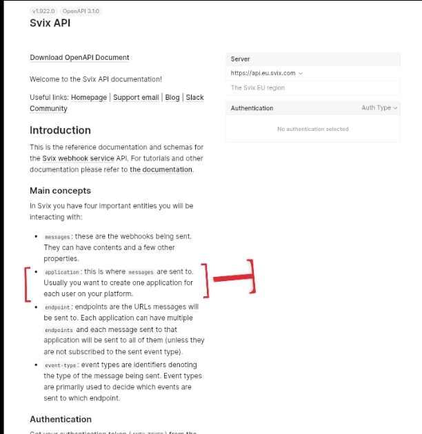
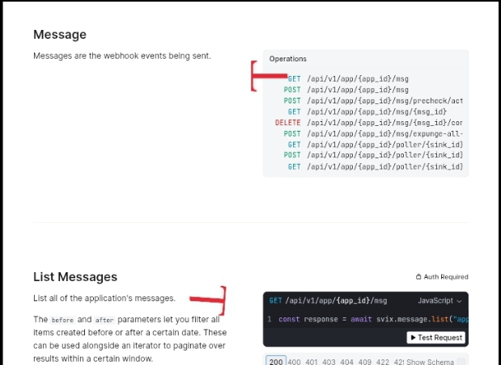
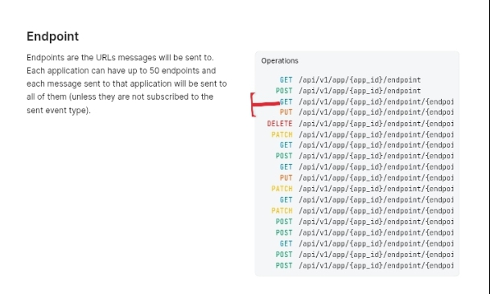

Svix Developer Onboarding Audit
Finding: The application boundary is introduced without explaining its operational scope.
Finding: The application boundary is introduced without explaining its operational scope.
The application boundary is introduced without explaining its operational scope.

The introduction recommends creating one application per user but does not explain that the application establishes the operational scope of key resources. Because the recommendation is presented as "usually," developers can reasonably interpret the application as an organizational grouping rather than a foundational architectural boundary.
Because the introduction does not explain the operational consequences of the application boundary, developers can reasonably treat it as a flexible organizational choice instead of the unit that scopes endpoint management and message history.

The Message API shows that message history is scoped to an application. This operational consequence is documented in the API reference but is not explained where the application model is first introduced, making it easy to underestimate the significance of the initial application boundary.
The assumption breaks when a team models multiple customers within a single application and later needs to manage endpoints or inspect message history on a per-customer basis. They discover that these operations are scoped to the shared application, making the original application boundary difficult to change.

The Endpoint API also scopes endpoint management to the application. Together with the Message API, this demonstrates that the application functions as an operational boundary rather than simply an organizational container.
Correcting the application boundary after onboarding can require reorganizing webhook resources and operational workflows, increasing migration effort, operational complexity, and support overhead.
The documentation correctly recommends creating one application per user but does not explain why that recommendation matters operationally. Explaining that the application defines the scope of endpoint management and message history would help developers make an informed architectural decision at the beginning of implementation.